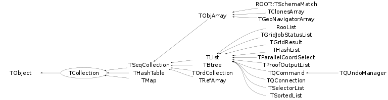

class TCollection: public TObject
Collection abstract base class. This class describes the base protocol all collection classes have to implement. The ROOT collection classes always store pointers to objects that inherit from TObject. They never adopt the objects. Therefore, it is the user's responsability to take care of deleting the actual objects once they are not needed anymore. In exceptional cases, when the user is 100% sure nothing else is referencing the objects in the collection, one can delete all objects and the collection at the same time using the Delete() function. Collections can be iterated using an iterator object (see TIterator). Depending on the concrete collection class there may be some additional methods of iterating. See the repective classes. TCollection inherits from TObject since we want to be able to have collections of collections. In a later release the collections may become templatized./*
 */
*/
Function Members (Methods)
This is an abstract class, constructors will not be documented.
Look at the header to check for available constructors.
public:
| virtual | ~TCollection() |
| void | TObject::AbstractMethod(const char* method) const |
| virtual void | Add(TObject* obj) |
| virtual void | AddAll(const TCollection* col) |
| void | AddVector(TObject* obj1) |
| virtual void | TObject::AppendPad(Option_t* option = "") |
| Bool_t | AssertClass(TClass* cl) const |
| virtual void | Browse(TBrowser* b) |
| Int_t | Capacity() const |
| static TClass* | Class() |
| virtual const char* | TObject::ClassName() const |
| virtual void | Clear(Option_t* option = "") |
| virtual TObject* | Clone(const char* newname = "") const |
| virtual Int_t | Compare(const TObject* obj) const |
| Bool_t | Contains(const char* name) const |
| Bool_t | Contains(const TObject* obj) const |
| virtual void | TObject::Copy(TObject& object) const |
| virtual void | Delete(Option_t* option = "") |
| virtual Int_t | TObject::DistancetoPrimitive(Int_t px, Int_t py) |
| virtual void | Draw(Option_t* option = "") |
| virtual void | TObject::DrawClass() constMENU |
| virtual TObject* | TObject::DrawClone(Option_t* option = "") constMENU |
| virtual void | Dump() const |
| static void | EmptyGarbageCollection() |
| virtual void | TObject::Error(const char* method, const char* msgfmt) const |
| virtual void | TObject::Execute(const char* method, const char* params, Int_t* error = 0) |
| virtual void | TObject::Execute(TMethod* method, TObjArray* params, Int_t* error = 0) |
| virtual void | TObject::ExecuteEvent(Int_t event, Int_t px, Int_t py) |
| virtual void | TObject::Fatal(const char* method, const char* msgfmt) const |
| virtual TObject* | FindObject(const char* name) const |
| virtual TObject* | FindObject(const TObject* obj) const |
| static void | GarbageCollect(TObject* obj) |
| static TCollection* | GetCurrentCollection() |
| virtual Option_t* | TObject::GetDrawOption() const |
| static Long_t | TObject::GetDtorOnly() |
| virtual Int_t | GetEntries() const |
| virtual const char* | TObject::GetIconName() const |
| virtual const char* | GetName() const |
| virtual char* | TObject::GetObjectInfo(Int_t px, Int_t py) const |
| virtual TObject** | GetObjectRef(const TObject* obj) const |
| static Bool_t | TObject::GetObjectStat() |
| virtual Option_t* | TObject::GetOption() const |
| virtual Int_t | GetSize() const |
| virtual const char* | TObject::GetTitle() const |
| virtual UInt_t | TObject::GetUniqueID() const |
| virtual Int_t | GrowBy(Int_t delta) const |
| virtual Bool_t | TObject::HandleTimer(TTimer* timer) |
| virtual ULong_t | Hash() const |
| virtual void | TObject::Info(const char* method, const char* msgfmt) const |
| virtual Bool_t | TObject::InheritsFrom(const char* classname) const |
| virtual Bool_t | TObject::InheritsFrom(const TClass* cl) const |
| virtual void | TObject::Inspect() constMENU |
| void | TObject::InvertBit(UInt_t f) |
| virtual TClass* | IsA() const |
| Bool_t | IsArgNull(const char* where, const TObject* obj) const |
| virtual Bool_t | IsEmpty() const |
| virtual Bool_t | TObject::IsEqual(const TObject* obj) const |
| virtual Bool_t | IsFolder() const |
| Bool_t | TObject::IsOnHeap() const |
| Bool_t | IsOwner() const |
| virtual Bool_t | IsSortable() const |
| Bool_t | TObject::IsZombie() const |
| virtual void | ls(Option_t* option = "") const |
| virtual TIterator* | MakeIterator(Bool_t dir = kIterForward) const |
| virtual TIterator* | MakeReverseIterator() const |
| void | TObject::MayNotUse(const char* method) const |
| virtual Bool_t | TObject::Notify() |
| void | TObject::Obsolete(const char* method, const char* asOfVers, const char* removedFromVers) const |
| static void | TObject::operator delete(void* ptr) |
| static void | TObject::operator delete(void* ptr, void* vp) |
| static void | TObject::operator delete[](void* ptr) |
| static void | TObject::operator delete[](void* ptr, void* vp) |
| void* | TObject::operator new(size_t sz) |
| void* | TObject::operator new(size_t sz, void* vp) |
| void* | TObject::operator new[](size_t sz) |
| void* | TObject::operator new[](size_t sz, void* vp) |
| TObject* | operator()(const char* name) const |
| virtual void | Paint(Option_t* option = "") |
| virtual void | TObject::Pop() |
| virtual void | Print(Option_t* option = "") const |
| virtual void | Print(Option_t* option, Int_t recurse) const |
| virtual void | Print(Option_t* option, const char* wildcard, Int_t recurse = 1) const |
| virtual void | Print(Option_t* option, TPRegexp& regexp, Int_t recurse = 1) const |
| virtual Int_t | TObject::Read(const char* name) |
| virtual void | RecursiveRemove(TObject* obj) |
| virtual TObject* | Remove(TObject* obj) |
| void | RemoveAll() |
| virtual void | RemoveAll(TCollection* col) |
| void | TObject::ResetBit(UInt_t f) |
| virtual void | TObject::SaveAs(const char* filename = "", Option_t* option = "") constMENU |
| virtual void | TObject::SavePrimitive(ostream& out, Option_t* option = "") |
| void | TObject::SetBit(UInt_t f) |
| void | TObject::SetBit(UInt_t f, Bool_t set) |
| void | SetCurrentCollection() |
| virtual void | TObject::SetDrawOption(Option_t* option = "")MENU |
| static void | TObject::SetDtorOnly(void* obj) |
| void | SetName(const char* name) |
| static void | TObject::SetObjectStat(Bool_t stat) |
| virtual void | SetOwner(Bool_t enable = kTRUE) |
| virtual void | TObject::SetUniqueID(UInt_t uid) |
| virtual void | ShowMembers(TMemberInspector& insp) |
| static void | StartGarbageCollection() |
| virtual void | Streamer(TBuffer& b) |
| void | StreamerNVirtual(TBuffer& b) |
| virtual void | TObject::SysError(const char* method, const char* msgfmt) const |
| Bool_t | TObject::TestBit(UInt_t f) const |
| Int_t | TObject::TestBits(UInt_t f) const |
| virtual void | TObject::UseCurrentStyle() |
| virtual void | TObject::Warning(const char* method, const char* msgfmt) const |
| virtual Int_t | Write(const char* name = 0, Int_t option = 0, Int_t bufsize = 0) |
| virtual Int_t | Write(const char* name = 0, Int_t option = 0, Int_t bufsize = 0) const |
protected:
| virtual void | TObject::DoError(int level, const char* location, const char* fmt, va_list va) const |
| virtual const char* | GetCollectionEntryName(TObject* entry) const |
| void | TObject::MakeZombie() |
| virtual void | PrintCollectionEntry(TObject* entry, Option_t* option, Int_t recurse) const |
| virtual void | PrintCollectionHeader(Option_t* option) const |
private:
| void | operator=(const TCollection&) |
Data Members
public:
| enum { | kIsOwner | |
| kInitCapacity | ||
| kInitHashTableCapacity | ||
| }; | ||
| enum TObject::EStatusBits { | kCanDelete | |
| kMustCleanup | ||
| kObjInCanvas | ||
| kIsReferenced | ||
| kHasUUID | ||
| kCannotPick | ||
| kNoContextMenu | ||
| kInvalidObject | ||
| }; | ||
| enum TObject::[unnamed] { | kIsOnHeap | |
| kNotDeleted | ||
| kZombie | ||
| kBitMask | ||
| kSingleKey | ||
| kOverwrite | ||
| kWriteDelete | ||
| }; |
private:
| static TCollection* | fgCurrentCollection | used by macro R__FOR_EACH |
| static Bool_t | fgEmptyingGarbage | used by garbage collector |
| static TObjectTable* | fgGarbageCollection | used by garbage collector |
| static Int_t | fgGarbageStack | used by garbage collector |
Class Charts
{kind=link}
{kind=link}
{kind=link}
{kind=link}

Function documentation
Bool_t AssertClass(TClass* cl) const
Make sure all objects in this collection inherit from class cl.
TObject * Clone(const char* newname = "") const
Make a clone of an collection using the Streamer facility. If newname is specified, this will be the name of the new collection.
Int_t Compare(const TObject* obj) const
Compare two TCollection objects. Returns 0 when equal, -1 when this is smaller and +1 when bigger (like strcmp()).
TObject * FindObject(const char* name) const
Find an object in this collection using its name. Requires a sequential scan till the object has been found. Returns 0 if object with specified name is not found.
TObject * FindObject(const TObject* obj) const
Find an object in this collection using the object's IsEqual() member function. Requires a sequential scan till the object has been found. Returns 0 if object is not found. Typically this function is overridden by a more efficient version in concrete collection classes (e.g. THashTable).
const char * GetName() const
Return name of this collection. if no name, return the collection class name.
Bool_t IsArgNull(const char* where, const TObject* obj) const
Returns true if object is a null pointer.
void ls(Option_t* option = "") const
List (ls) all objects in this collection. Wildcarding supported, eg option="xxx*" lists only objects with names xxx*.
const char* GetCollectionEntryName(TObject* entry) const
For given collection entry return the string that is used to identify the object and, potentially, perform wildcard/regexp filtering on.
void PrintCollectionEntry(TObject* entry, Option_t* option, Int_t recurse) const
Print the collection entry.
void Print(Option_t* option = "") const
Defualt print for collections, calls Print(option, 1). This will print the collection header and Print() methods of all the collection entries. If you want to override Print() for a collection class, first see if you can accomplish it by overriding the following protected methods: void PrintCollectionHeader(Option_t* option) const; const char* GetCollectionEntryName(TObject* entry) const; void PrintCollectionEntry(TObject* entry, Option_t* option, Int_t recurse) const; Otherwise override the Print(Option_t *option, Int_t) variant. Remember to declare: using TCollection::Print; somewhere close to the method declaration.
void Print(Option_t* option, Int_t recurse) const
Print the collection header and its elements. If recurse is non-zero, descend into printing of collection-entries with recurse - 1. This means, if recurse is negative, the recursion is infinite. Option is passed recursively.
void Print(Option_t* option, const char* wildcard, Int_t recurse = 1) const
Print the collection header and its elements that match the wildcard. If recurse is non-zero, descend into printing of collection-entries with recurse - 1. This means, if recurse is negative, the recursion is infinite. Option is passed recursively, but wildcard is only used on the first level.
void Print(Option_t* option, TPRegexp& regexp, Int_t recurse = 1) const
Print the collection header and its elements that match the regexp. If recurse is non-zero, descend into printing of collection-entries with recurse - 1. This means, if recurse is negative, the recursion is infinite. Option is passed recursively, but regexp is only used on the first level.
void RecursiveRemove(TObject* obj)
Remove object from this collection and recursively remove the object from all other objects (and collections).
Int_t Write(const char* name = 0, Int_t option = 0, Int_t bufsize = 0) const
Write all objects in this collection. By default all objects in the collection are written individually (each object gets its own key). Note, this is recursive, i.e. objects in collections in the collection are also written individually. To write all objects using a single key specify a name and set option to TObject::kSingleKey (i.e. 1).
Int_t Write(const char* name = 0, Int_t option = 0, Int_t bufsize = 0)
Write all objects in this collection. By default all objects in the collection are written individually (each object gets its own key). Note, this is recursive, i.e. objects in collections in the collection are also written individually. To write all objects using a single key specify a name and set option to TObject::kSingleKey (i.e. 1).
void operator=(const TCollection& )
TObject ** GetObjectRef(const TObject* obj) const
TIterator * MakeIterator(Bool_t dir = kIterForward) const
void RemoveAll(TCollection* col)